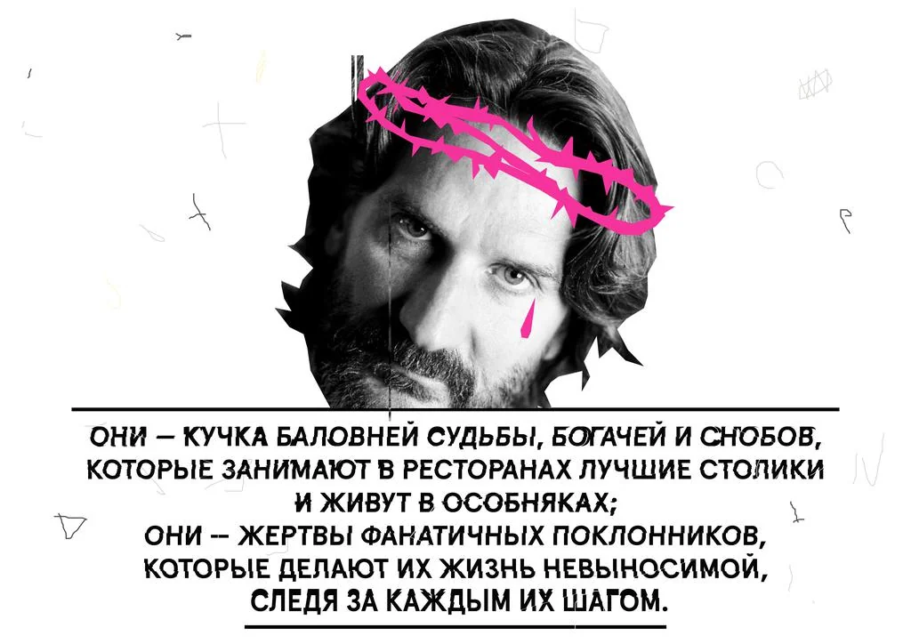

Препринт: Антуан Лилти "Публичные люди"
Культура селебрити в контексте искусства и “общества спектакля”
В издательстве Ивана Лимбаха вышла книга современного французского историка Антуана Лилти “Публичные фигуры: Изобретение знаменитости (1750–1850)”. This Is Media публикует отрывок из этого занимательного исследования — о том, откуда взялись те самые звезды, которые заполонили наши экраны и наше воображение. Перевод с французского Павла Каштанова.
Знаменитости сегодня — неотъемлемая часть нашего общества. Их жизнь обсуждается повсюду: в специализированных изданиях и в обычной прессе, в кино и на телевидении, на радио и в интернете. Эксперты по массмедиа и популярной культуре посвятили звездам многочисленные работы, исследуя их аудиторию, их судьбы, глубинный смысл того обожания, которое они вызывают. Существует семиология и социология, а с недавних пор — даже экономика мира знаменитостей — верный знак, что данное явление все больше легитимируется. Но историки мало интересуются его истоками. Откуда берутся те самые звезды, которые заполонили наши экраны и наше воображение?
В отсутствие серьезных исторических трудов на эту тему рынок идей (правда, изрядно подзалежавшихся) предлагает две диаметрально противоположные версии. Первая гласит, что селебрити — универсальное явление, свойственное любому обществу в любую эпоху. Занимательный пример подобного взгляда на вещи представлен в грандиозной книге Лео Броди “Страсти по звездам”, в которой прослеживается история понятий “знаменитости” и “славы” со времен Александра Македонского до наших дней. Как часто бывает в таких случаях, вас может восхищать масштаб предприятия и справедливость некоторых наблюдений, но конечный результат вызывает скептическое отношение: зачем нужна столь широкая концепция “селебрити”, объединяющая под одним названием такие разнородные явления, как слава римских императоров и знаменитость современных актрис? Согласно второй версии, знаменитость — очень поздний феномен, связанный с ростом массовой культуры, появлением “общества спектакля” и господством аудиовизуальных СМИ. При этом определяющими свойствами данного феномена признаются самые крайние его проявления: беснующиеся фанаты, бесконечно тиражируемые фотографии знаменитостей, их колоссальные доходы, их причуды, успех реалити-шоу и глянцевых изданий. Эти две версии странным образом сочетаются друг с другом. Их близость способствует критическому отношению к понятию “знаменитости”, консервативной и крайне упрощенной оценке этого явления. В общих чертах ее можно выразить так: очень известные люди существовали всегда, но в прошлом этой известностью они были обязаны своим подвигам, или талантам, или каким-то своим творениям, тогда как сегодняшние звезды знамениты только потому, что их жизнь освещает пресса, — ничем другим они себя не зарекомендовали.
Знаменитость, по мнению сторонников этой теории, — та же слава, только вывернутая наизнанку, медийный феномен и пример тавтологии. Его формулу вывел американский историк Дэниел Бурстин: селебрити представляют собой людей, знаменитых тем, что они знамениты (well-known for their well-knownness), людей без таланта и без заслуг, не считая одного-единственного достижения: им посчастливилось попасть на ТВ.
Подобные объяснения неудовлетворительны. Они опираются на излишне широкие или, напротив, слишком узкие определения знаменитости, которые не позволяют постичь ни ее истоков, ни глубинного смысла. Приравнивая знаменитость к любой из форм известности, мы затрудняем понимание специфики современных механизмов этого явления. Сводя его к крайностям нынешней star-system, мы забываем, что оно возникло в самый разгар Нового времени в форме публичного признания, берущего начало в эпоху Просвещения. Неудивительно, что исследователям знаменитости не удается избежать противоречий. То они объявляют ее признаком новой элиты, наделенной правом на медийное присутствие и обладающей рядом привилегий, то — механизмом отчуждения, который подчиняет знаменитых людей желаниям всемогущей публики. Некоторые авторы рассматривают ее как суррогат древних религиозных верований и мифов: культ звезд — будто бы разновидность известного антропологии культа святых и героев, современное идолопоклонство. Еще в 1957 году в одном из первых исследований, посвященных звездам кино, Эдгар Морен писал: “Героизируемые и обожествляемые, звезды сейчас — нечто большее, чем просто объект обожания. Они превратились в предмет культа. Вокруг них складываются зачатки религии”. Эта истина, когда-то обладавшая достоинством новизны, в наши дни стала трюизмом. Для других знаменитость, напротив, — явление сугубо светское, присущее “обществу спектакля” и культурной индустрии, чья внутренняя логика требует концентрации богатства и престижа в пределах одной небольшой группы. Под красивой оберткой не оказывается ничего, кроме комбинации маркетинговых ходов.
В иных случаях отдельные элементы различных гипотез объединяются в одну картину, хотя и нестройную; так произошло с книгой Криса Роджека “Селебрити”, которая в 2001 году была опубликована в США, часто цитировалась и в 2003 году удостоилась французского издания с послесловием Фредерика БегБедера. Бегбедер — персонаж мира селебрити и одновременно его бытописатель, способный благодаря сочетанию этих качеств многое о нем рассказать, — берется в двухстраничном тексте свести воедино самые распространенные и, казалось бы, взаимоисключающие стереотипы, связанные со знаменитостями.

Указав на это противоречие, Бегбедер предсказуемо переходит к обличению рынка — излюбленному приему беззубой критики: “Знаменитость, как и реклама, лишь мираж, служащий одной-единственной цели — увеличивать продажи”.
Указав на это противоречие, Бегбедер предсказуемо переходит к обличению рынка — излюбленному приему беззубой критики: “Знаменитость, как и реклама, лишь мираж, служащий одной-единственной цели — увеличивать продажи”.
Но отбросим лукавство. Эти противоречия имеют долгую историю. Они подводят нас к непростому вопросу: почему знаменитость остается столь неоднозначным явлением и столь сомнительной ценностью?
Я предлагаю отталкиваться от такого определения знаменитости, которое не сводилось бы к широкой известности. Известности можно добиться самыми разными путями. Если мы хотим придать рассматриваемому понятию аналитическую эффективность с точки зрения социологии и истории, нам нужно отделить его от иных форм признания: славы и репутации. Под “славой” понимается признание, добытое неким незаурядным человеком за какие-то особые достижения — идет ли речь о героических поступках или о художественных и литературных произведениях. Слава распространяется по преимуществу посмертно как память о герое, запечатленная в коллективном сознании.
Репутация же соответствует коллективной оценке членами некой группы или сообщества одного из своих товарищей: хороший ли он муж и гражданин, достаточно ли он компетентен, порядочен и так далее. Репутация складывается посредством социализации мнений, через разговоры, пересуды. Она может быть совершенно неформальной или в какой-то степени формализованной. Если слава уготована лишь немногим исключительным личностям, то каждый человек, поскольку он живет в обществе и не может не быть объектом суждений других людей, уж точно обладает репутацией, которая зависит от местонахождения индивида и его референтной группы.
Противоречие между двумя этими формами признания — славой и репутацией — имеет в европейской истории давние корни, хотя иногда оно скрыто от нас за изобилием терминов, которыми словари обозначают рассматриваемые явления. Можно, например, вспомнить французские слова renom, renommée, estime, reconnaissance. Вероятно, во всех языках наличествует значительное число терминов подобного рода. Английское слово fame имеет, как мы увидим, несколько значений, пересекающихся с понятиями reputation и glory. Поэтому здесь я использую термины “слава” и “репутация” преимущественно в аналитическом качестве: у нас в руках оказываются инструменты, позволяющие отличать разные социальные и культурные модели. Слава относится к героям, святым, выдающимся личностям, ко всем тем фигурам, чье прославление всегда играло существенную роль в западной культуре, а в Новое время вылилось в появление образа “великого человека”, столь милого сердцу философов-просветителей; репутация же зависит от действия таких локальных механизмов, как социальные суждения, fama, честь. Не в силах различить эти две формыпризнания, большинство историков, введенных в заблуждение несовершенством нашего словаря, склонны их смешивать, тогда как на деле в их основе лежат совершенно разные социальные механизмы. Даже сегодня их несхожесть бросается в глаза. Одно дело слава великих государственных деятелей, знаменитых художников, ученых, спортсменов — Шарля де Голля, Пабло Пикассо, Марселя Пруста, Марии Склодовской-Кюри, Пеле. Другое — репутация обычного человека, чьи личные и профессиональные качества оцениваются теми, кому он известен и среди кого он вращается. Можно, нисколько не претендуя на славу, быть врачом, знаменитым в родном городе, или слыть в кругу коллег выдающимся ученым. Кто не знает, что Винсент Ван Гог, после смерти добившийся всемирной славы, при жизни был известен лишь кучке единомышленников?
Но специфика современного общества состоит в том, что мы имеем и третью форму признания: знаменитость. На первый взгляд этот термин равнозначен понятию “широкой” репутации.
Знаменитый человек известен не только своей семье, коллегам, соседям, представителям своего класса, клиентам, но также огромному количеству людей, с которыми у него нет никаких прямых контактов, которые никогда с ним лично не встречались и никогда не встретятся, но которые не раз видели его публичный образ, то есть совокупность слов и изображений, связанных с его именем.
Знаменитый человек известен не только своей семье, коллегам, соседям, представителям своего класса, клиентам, но также огромному количеству людей, с которыми у него нет никаких прямых контактов, которые никогда с ним лично не встречались и никогда не встретятся, но которые не раз видели его публичный образ, то есть совокупность слов и изображений, связанных с его именем.
Иначе говоря, знаменитая личность знакома тем, у кого нет ни малейших причин иметь о ней какое-либо мнение, кто прямо никак не заинтересован в вынесении собственных суждений о ее личных качествах и профессиональных навыках. Знаменитость певца начинается тогда, когда его имя и лицо становятся известны людям, не слушающим его песен; знаменитость футболиста — когда его узнают люди, никогда не смотревшие футбольных матчей с его участием. Знаменитый человек должен — в рамках своего статуса — иметь дело не с коллегами, поклонниками, клиентами, соседями, а с публикой.
Приближает ли знаменитость (известность в широких кругах) к славе? Может быть, она — лишь этап на пути к более высокой ступени, промежуточная стадия между репутацией (локальное явление) и славой (универсальное явление). Данная гипотеза предполагает наличие так называемых “кругов признания”: так, в области культуры успех начинается с признания коллег по цеху, которое распространяется на поклонников и критиков, а потом — на широкую публику. Недостаток этой модели в том, что она недооценивает серьезность различий между репутацией, славой и известностью. Слава обычно бывает посмертной (даже если ее ищут при жизни), она создается потомками; знаменитость же можно обрести, только если творец и публика сосуществуют в одну эпоху. Знаменитость не коммеморативна, она вторит быстрому ритму современной жизни. Если слава обозначает единодушное признание всем обществом исключительных заслуг некоего индивида — героя, воплощавшего при жизни определенные интеллектуальные, физические или моральные достоинства, то в основе знаменитости лежит другой принцип: любопытство, которое вызывает у современников та или иная яркая личность. Это любопытство не всегда восхищенное и редко единодушное: есть знаменитые преступники, есть знаменитости скандальные и сомнительные.
С другой стороны, знаменитость, несмотря на внешние признаки, ни в коей мере не тождественна “широкой” репутации. Увеличивая до предела “круги признания”, рекламные механизмы создают особую, специфическую реальность. Знаменитость сразу же перестает подчиняться критериям, определяющим репутацию. Когда писатель, актер или преступник становятся знаменитыми, интерес публики к ним измеряется иными критериями, нежели те, по каким оценивается их профессиональная деятельность. Они становятся публичными фигурами; отныне о них судят не только по их профессиональным качествам, но и по умению пробуждать и удерживать интерес публики. Так объясняется удивительная способность культуры знаменитости уравнивать людей, представляющих самые разные сферы деятельности. К актерам и политикам, писателям и героям светской хроники в период их известности (иногда довольно краткий) относятся одинаково, как к звездам медиашоу.
Теперь о втором признаке, отличающем знаменитость от репутации: любопытство, проявляемое к знаменитым людям, особенно сильно сказывается на их частной жизни, превращающейся в объект коллективного внимания. Выход признания за пределы ближнего круга — коллег и родственников — рождает среди публики не легкий, сдержанный, отстраненный интерес, как можно было бы ожидать, но сильнейшую эмоциональную привязанность, воплощением которой служит фигура фаната. Эта привязанность неотделима от личной, сокровенной связи с кумиром, хотя чаще всего речь идет об отношениях заочных, воображаемых и односторонних. Разница между знаменитостью и репутацией, знаменитостью и славой не только количественная; о ней невозможно судить по числу людей, знающих то или иное лицо.
Впрочем, было бы нелепо утверждать, что барьеры между репутацией, знаменитостью и славой полностью непроницаемы. Важнее обозначить круг вопросов, встающих перед исследователем: почему некоторые люди, которыми могут быть не только актеры, писатели и политики, но также “знаменитости дня”, случайные герои хроники, вызывают такой интерес, не всегда зависящий от их заслуг и вообще от их действий? Как этот интерес меняет формы признания, существующие в различных специфических сферах, например в мире культуры или в области политики? Почему к знаменитости всегда относились с таким подозрением и недоверием, включая тех, кто отчаянно ее жаждал?
Любое исследование относительно знаменитости должно начинаться с вопроса: какова природа интереса, заставляющего нас следить за жизнью кучки наших современников, с которыми мы никогда не встречались лично?
Любое исследование относительно знаменитости должно начинаться с вопроса: какова природа интереса, заставляющего нас следить за жизнью кучки наших современников, с которыми мы никогда не встречались лично?
Чтобы на него ответить, нам нужно отследить первые проявления подобного интереса. Знаменитость как феномен возникла в XVIII веке, в ходе глубокой трансформации публичного пространства и первых попыток коммерциализации развлечений. С тех пор культура знаменитости прошла долгий путь развития, соразмерный расширению медиасферы. Но основные механизмы, характеризующие эту культуру, вполне опознаваемы уже в конце XVIII века. Некоторые авторы того времени в точности описали такие механизмы, стремясь понять, что представляет собой новый социальный персонаж — знаменитая личность, — который, как они видели, несводим ни к чему им известному: ни к герою, чей образ переживал возрождение под видом “великого мужа” и “гения”, ни к “честному человеку”, обладателю безупречной репутации, ни к художнику, признанному в своем кругу. Таким образом, развитие специфических механизмов знаменитости сопровождается топикой знаменитости. Этим термином я обозначаю совокупность суждений, анекдотов и рассказов, которые, не претендуя на последовательный анализ, свидетельствуют о коллективном усилии по осмыслению нового феномена и сообщают нам о нарративных и лингвистических средствах, с помощью которых люди пытались сориентироваться среди непривычных им явлений социального мира. В XVIII веке появляется само слово “знаменитость” в его современном значении, но дело этим не ограничивается: описываемые им реалии вызывают к жизни целый поток различных толкований, призванных описать эти реалии и подыскать им какое-то объяснение.
Изучение феномена знаменитости в момент его рождения (если можно так выразиться), когда такие его атрибуты, как глянцевые журналы, телевизионные реалити-шоу, фан-клубы и так далее, еще не укоренились в общем комплексе культурных институтов, позволяет яснее увидеть присущие ему противоречия. Выступая символом социального успеха, маня благами, ассоциирующимися со статусом звезды, знаменитость никогда не была по-настоящему легитимной. Всегда считавшаяся чем-то эфемерным, поверхностным, даже неподобающим, она служила объектом вечных нападок и насмешек. Не связан ли парадокс знаменитости, к которой стремятся, видя в ней своеобразную форму социального престижа, и в то же время клеймят, называя фантомом, порождением СМИ, с неоднозначностью того места, какое занимает в демократических обществах коллективное мнение? Чтобы ответить на этот вопрос, надо постараться описать типы деятельности и поведения, придающие форму культуре знаменитости, а также многочисленные попытки их осмыслить. Но и сам образ публичного пространства, сложившийся в эпоху Просвещения, трансформировался под воздействием знаменитости. Со времени выхода трудов Юргена Хабермаса публичное пространство воспринимается как площадка для критических, рациональных дискуссий, где частные лица осуществляют публичное использование разума. Для Хабермаса публичное пространство — пространство буржуазного, просвещенного, либерального типа — образуется в XVIII веке на обломках публичного пространства “представительского” типа, где место каждого человека определял его социальный статус и где политическая коммуникация осуществлялась только сверху вниз: от короля к подданным. Однако, по его мнению, это “критическое” публичное пространство, отождествляемое с наследием просветителей, в XIX веке вступило в стадию кризиса, а в ХХ, под воздействием массмедиа и вследствие коммерциализации общества, окончательно исчезло, уступив место такому типу публичного пространства, где доминировали политическая пропаганда, индустрия культуры и рынок. Теперь “публичное” мнение — не суд народа, носителя идеала свободы, а пассивное орудие манипуляций. Полностью извращен сам принцип публичности. Он больше не соответствует своему назначению — выносить тайные деяния власти на общий суд; он стал синонимом рекламы, фабрикой по “обработке” умов ради продвижения определенных товаров и политиков. Многочисленные авторы, даже если они не со всем согласны в этой гипотезе, разделяют идею о безвозвратно ушедшем “золотом веке” публичного пространства. Конечно, данная идея ложится в общую струю рассуждений о суетности и ничтожности нашего века, где господствуют шоу-бизнес и рынок, промывание мозгов избирателям и поставленное на поток производство звезд-однодневок.
Здесь противопоставление того вида публичности, который рассматривается как возможность критического использования разума, другому — считающемуся средством медийных и коммерческих манипуляций, — не исторично, а нормативно. Политический идеал (публичное обсуждение вопросов) проецируется на эпоху Просвещения, для того чтобы легче было критиковать в нашем современном мире все, что этому идеалу не соответствует. Тем самым необоснованно идеализируется восемнадцатое столетие, но главное, создается препятствие для понимания того, что представляет собой публика.
Изучение механизмов знаменитости обнаруживает, что публика — не только “инстанция”, выносящая суждения о литературе, живописи и политике; скорее, это собрание анонимных читателей, объединенных тем, что они читают одни и те же книги, а с XVIII века — одни и те же газеты.
Изучение механизмов знаменитости обнаруживает, что публика — не только “инстанция”, выносящая суждения о литературе, живописи и политике; скорее, это собрание анонимных читателей, объединенных тем, что они читают одни и те же книги, а с XVIII века — одни и те же газеты.
Публику образует не обмен рациональными аргументами, а общее любопытство к чему-то и общая вера во что-то, интерес к одним и тем же вещам в один и тот же момент и осознание синхронности проявления этого интереса. Отсюда двойственность публики, интересующейся частной жизнью звезд не меньше, чем дебатами политиков, и редко оправдывающей ожидания политических философов и моралистов. Большинство авторов, на которых мы будем ссылаться, в этом убеждать не надо. Пусть успех Хабермаса, переосмыслившего Кантово определение публики, не заслоняет от нас одного важного обстоятельства: за прошедшие два столетия увидело свет немало других толкований понятия “публика”, лучше учитывающих его амбивалентность. Со второй половины XVIII века вопрос о публике всегда считался неразрывно связанным с проблемой общественного мнения. Таким образом, вопрос о публике неотделим от теории коммуникации — в том виде, как ее понимал живший через столетие после Иммануила Канта социолог Габриэль Тард, теоретик социальной имитации. Согласно ему, только “ощущение актуальности” — осознание факта, что тебе интересно то же, что и твоим современникам, — и получаемое от этого удовлетворение составляют единство и силу публики, которая определяется автором как “разрозненная группа людей, отделенных друг от друга физически и объединяемых только ментально”. Это единение, осуществляющееся прежде всего через чтение периодической печати, а также через механизмы моды и через литературный успех, основано на эффекте коллективной имитации: отдельные личности влияют друг на друга на расстоянии благодаря присутствующему у них сознанию, что они составляют публику, то есть интересуются одними и теми же вещами в один и тот же момент.
Очевидно, что публичности — если понимать под этим словом процесс постоянного воспроизводства публики с помощью распространения дискурсов и зрительных образов через прессу и другие медиа — изначально присуща амбивалентность. На первый взгляд публичность демократична, ибо противопоставляет себя закрытости, монопольному владению информацией узким кругом лиц, и благоприятствует более широкому и эгалитарному распространению политических идей и произведений культуры. Но в глазах элит она нередко выступает символом вульгарности, ибо ставит под сомнение их стратегию подчеркивания своего культурного превосходства и претензии на исключительную компетентность в делах политики. Публичность подразумевает спорадические и иногда мимолетные коллективные увлечения, кажущиеся иррациональными (вспомним успех бестселлеров, популярность, измеряемую опросами общественного мнения и ими же создаваемую, культ знаменитостей), тогда как на деле они — часть того самого механизма имитации, коллективного самовнушения, который лежит в основе понятия “публика”. Публика не просто инстанция, рождающая дискурс, она пронизана эмоциями. Точно так же и публичность — это разом и условие коллективных усилий критики, и орудие рыночного капитализма, и движущая сила массовой культуры. Такая многоуровневая концепция, представляющая альтернативу рационалистической формуле Хабермаса, не дает скатиться к разговорам о потерянном “золотом веке”, любимом приеме недалеких критиков; она, напротив, показывает амбивалентную природу публичности.
Рассмотрение феномена знаменитости через призму публичности позволяет выявить его наиболее важные характеристики, которые часто кажутся противоречивыми и требуют пояснений. Как, например, поклонение знаменитостям, приобретающее все более персонализированную и субъективную форму по мере того, как оно распространяется.
Этот парадокс объясняется характером связей между знаменитостью и механизмами индивидуализации: она одновременно и отрицает их, и стимулирует их работу. Индивид ощущает свою уникальность в тот самый момент, когда растворяется среди публики. Таков парадоксальный принцип всей массовой культуры. Кроме того, объяснения стоит искать в инверсии частного и публичного, типичной для культуры знаменитости. Интерес публики вызывают самые заветные, самые интимные подробности жизни кумира. Его имидж выстраивается так, чтобы выдающиеся качества, поднявшие его на пьедестал, отошли на второй план и он предстал бы чудаковатым, ошибающимся, слабым человеком. В этом одна из глубинных причин возникновения любопытства и эмпатии к звездам. Знаменитость публичной фигуры роднит ее с сильными мира сего, а слабости и недостатки сближают с простыми смертными.
В XVIII веке подобная смесь любопытства и эмпатии воплотилась в новом, бурно развивающемся литературном жанре, романе, особенно романе сентиментальном, чей успех сопровождал зарождающуюся культуру знаменитости. Читатели “Памелы” и “Новой Элоизы” восторгаются героями, так похожими на них самих, чья повседневная жизнь и душевные метания описаны во всех подробностях. В это же время самые знаменитые люди эпохи становятся настоящими публичными фигурами; об их жизни рассказывают так, будто это роман с продолжением. Традиционные эмоции вроде восхищения и жалости вытесняются любопытством и эмпатией, двумя главными стимулами идентификации, а социальные условия уравниваются настолько, что каждый может в какой-то степени отождествлять себя с любым из своих современников. У человека Нового времени пытливое и восприимчивое “я”. Несмотря на социальную дистанцию, он узнает в других ближнего. Не связано ли утверждение знаменитости в XVIII веке с этими двумя феноменами: развитием публичности и новым пониманием человеком своего “я”? Отнюдь не являясь противоположностями, они представляют две грани Модерности.
Но уместно ли в наши дни пользоваться термином “модерность”? Если на протяжении XX века она оставался центральным понятием для социальных наук, то сейчас отношение к ней крайне подозрительное. Ей инкриминируют и продвижение телеологической концепции истории, ориентированной исключительно на нынешнюю эпоху, и навязывание западного видения истории, и проповедование наивно-прогрессистских вульгарно-полисемичных идей, и сохранение туманного и нормативного содержания. Короче говоря, ее считают наследием прежних времен, когда историки и социологи не чурались противопоставлять современных людей, то есть самих себя, представителям всех других эпох (античности, средневековья) — примитивным людям, стесненным традициями и предрассудками.
И все же без этого понятия нам будет очень трудно обойтись, поэтому попробуем уточнить его значение. Словом “модерность” я буду обозначать здесь две вещи. Прежде всего ряд глубоких перемен, в разное время и в разных формах затронувших европейское общество, хотя их пик пришелся, по крайней мере, в Западной Европе, на середину XVIII — начало XX века. Вот их основные черты: урбанизация, индустриализация, социальное разделение труда, увеличение числа легитимных участников политической жизни, отмирание правового неравенства (и появление новых форм неравноправия), утверждение “инструментальной” рациональности, “расколдовывание мира”; каждый решает сам, какое из этих изменений сыграло бóльшую, а какое меньшую роль. Они часто обсуждались в контексте “больших нарративов”, таких как демократизация, промышленная революция, конец общества порядка, секуляризация. О них, обо всех их нюансах можно говорить бесконечно. Но полностью отказаться от разговора о них трудно. В рамках данной книги наше внимание привлекут главным образом два их аспекта, реже других удостаивающиеся упоминания: развитие способов дистанционной коммуникации — от появления прессы до изобретения радио и телевидения — и утверждение идеала аутентичной личности, наиболее полно отразившееся в романтизме. Развитие так называемой “медийной коммуникации” имело серьезные последствия для общества и культуры, благоприятствуя новым формам социального взаимодействия, заметно отличающимся от контактов в традиционных обществах, и свободной циркуляции культурных ценностей, которые стали в каком-то смысле рыночными продуктами. Если телекоммуникации XX века и ускорили эту мутацию, то ее генезис восходит к изобретению печати и ее бурному росту в XVIII веке. Все больше распространяются тексты, изображения, информация, предназначенные для широкого, потенциально неограниченного круга людей, и это глубоко трансформирует пути узнавания индивида его современниками. Акцентирование подлинности своего “я”, которое противопоставляется любым социальным проявлениям, превращающим индивида в публичную фигуру, было по большому счету реакцией на новую медийную ситуацию.
Но модерность — это также отношение ко времени, манера современного человека говорить о себе, утверждение своей специфичности, ощущение разрыва с прошлым, растущее стремление к рефлексивности. Историография в том виде, в каком мы ее знаем последние два века, полностью зависит от этого современного отношения ко времени, позволяющего рассматривать прошлое как объект познания. Это делается как для того, чтобы сохранить дистанцию между настоящим и прошлым, так и для того, чтобы понять, чем мы ему обязаны и что в нем для нас важно. Что до меня, я не воспринимаю прошлое как странный, непривычный мир, населенный чуждыми существами, и это дает возможность видеть в нем не только то, что отдаляет от него нас, людей Нового времени. Я нахожу там знакомые обычаи и верования, хотя иногда они облечены в другую форму, чем у нас; я обнаруживаю там истоки противоречий, над разрешением которых мы продолжаем биться и сегодня.
READ. WATCH. FUCK OFF.
умеем отправлять интересные дайджесты на почту раз в неделю
введите чей-нибудь мэйл
Сайт использует IP адреса, cookie и данные геолокации Пользователей сайта, условия использования содержатся в Политике по защите персональных данных.
© 2018 This Is Media
Издание «ThisIsMedia» зарегистрировано Федеральной службой по надзору в сфере связи,
информационных технологий и массовых коммуникаций (
Роскомнадзор
) 20.07.2017 за номером
ЭЛ №ФС77-70378
Учредитель: ООО "ОрденФеликса", Главный редактор: Суслопаров С. А.
Для лиц старше 18 лет